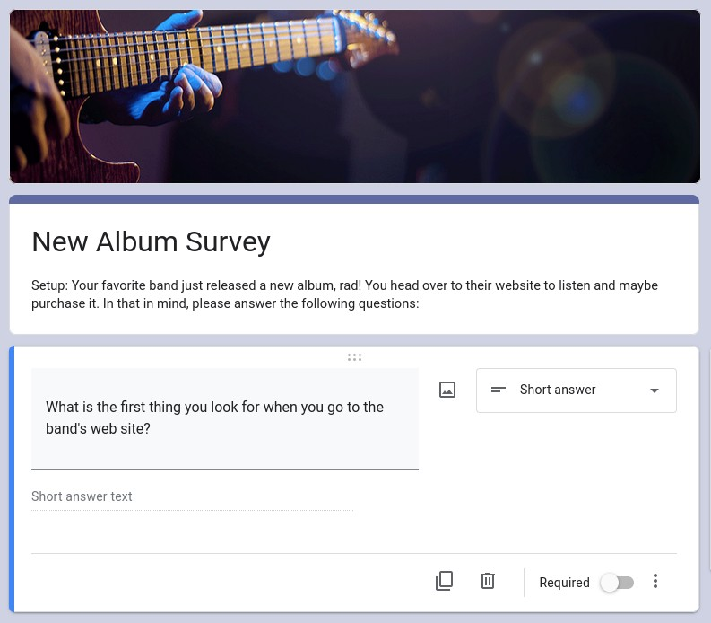

This is my current project and is a work in progress. New sections will be added as the project moves forward through the steps from understanding the challenges, to completed code.
While pursuing the Google UX Certification (via Coursera.com) I was tasked with designing a responsive landing page with a random prompt (via Sharpen.com). The third prompt I saw really sang to me:
Design a bands' new album landing page as a responsive web site.
As a life-long music nerd and musician, I felt this was the perfect way to build something that, hopefully, could be expounded upon later into a full band site with all the bells and whistles. This New Album Landing Page project case study, as detailed below, has been a fascinating challenge and I have learned so much from the process. From learning about the views of music fans and promoters to tinkering with layouts to make the interaction more delightful every step has been educational as much as it has been fun. Please see the sections below for each major step in the process for this project and feel free to click the links for more detailed information.
Thank you for your time and kind attention.